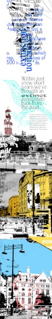
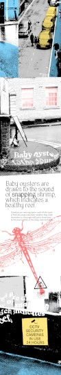
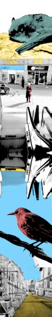
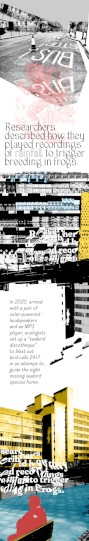
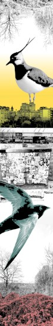
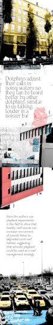
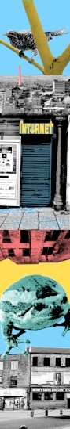
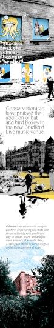
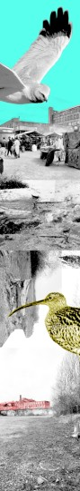

#^------------------------------
#^title trim=ends

LAGU MADU - DENGAR MANIS YA - shi Blank

#^------------------------------
#^body trim=ends form=markdown

<div class="all">
<a href="./lagumadu.html">START</a>


> “No one told me that when i left home, the sounds of that particular past - during the formation of childhood and youth - would come back to haunt me; a distant call to return. And when that finally happened, the sounds had changed in its entirety - the familiar now an alien(ised) auditory landscape.
> To end the haunting was not possible - it never was to begin with.”
> ~ shi Blank, Oct 2024


**_LAGU MADU_** aims to appease this eldritch phenomena by playing a procedurally composed ambient soundtrack formed of sounds and field recordings by urban creatures and local wildlife.


*Each listen is a new experience, never the same.*


**_LAGU MADU_** makes a comparison between the forced migration of fauna by violent displacement and the artist's own story of migrating to the UK by recreating the echoes from their past in Singapore combined with the now in Bradford.


It attempts to call attention to the disappearing sounds of nature and to reflect on the broader issue of biodiversity loss and the impact of human activities on the environment.


**_LAGU_**  - a song  
**_MADU_** - honey(pot)


It is an invocation for the past to reclaim the future.


---





---


### Acknowledgements

Thanks to Kriss Blank for your unwavering support and everything in between.  
Thanks to Bethany Clarkson (*Yorkshire Wildlife Trust*) for your consistent + timely responses.  
Thanks to Caro Blount-Shah for the invitation to the Down To Earth exhibition at Trapezium Arts which initiated this project.  


---


### Glossary

**_Anthropogenic_** describes changes in nature made by people.  
**_Bioacoustics_** is the study of the production, transmission and reception of animal sounds.  
**_Defaunation_** is the loss of animals in all its forms, including extinction, extirpation, or population declines.  
**_Defaunation_** is the reduction in animal populations and/or species extinctions due to human activity.  
**_Field recording_** is the audio recording of natural and human-produced sounds outside a recording studio.  
</div>
